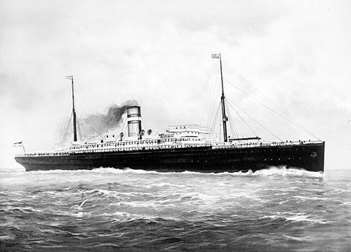

The Biography of Adan deRyke
A Dutch Artist Born In Japan
My great grandfather, Adan deRyke, was a fairly prolific and well-known artist in the area. His granddaughter, Roberta M. deRyke-Kemp-VanWasshnova, put together a biography for him in 1999. I have recreated that document here, with updated images as appropriate. Here's the original PDF
-- Jack Baty
Figure 1: Adan Marius deRyke
"My father provided for the family by doing all kinds of art work." Peter deRyke continues explaining how his father, Adan paid the doctor bills and bought food for his family with his paintings. The deRyke family was struggling through the Depression years. Times were very difficult but Adan is remembered fondly as being a kind and generous man, a good provider.
After hearing bits and pieces of Adan's background, I decided to do some digging and find out about this man, Adan Marius deRyke. This is what I've discovered through many hours of research.
September 24, 1879,a baby boy was born. His parents were Johannis & Johanna deRijke of Dutch decent. This baby "Adan" was the youngest of seven children. He was born in Osaka, Japan. How did his child of Dutch parents come to be born in Japan?
Through research it has been discovered that Adan's father, Johannis was from Colijnsplaat, a small Dutch village on the North Sea. It was here where Johannis learned the ways of the sea from his father, Pieter deRijke. Together they worked designing the dams and polders of Holland. Johannis earned the reputation as an expert in water engineering and was contacted by the Japanese government as part of the Meiji Restoration Project to devise a system to control the flood problems in Japan.
…And so it was that Johannis de Rijke and his wife, Johanna went to Japan in 1873. Their oldest two children (Anna Katharina & Johannis Laurens) were born in The Netherlands and traveled with them to Japan. Shortly after their arrival, their second son, Pieter, was born. Adan's brother, Eleazar Marius and two sisters, Eis M.J. & Jacoba Johanna were also born in Japan. Then, last but not least, Adan was born. The deRijke family settled in a Japanese home in Osaka but later moved to Kobe.
On June 8, 1881,when Adan was just 22 months old his mother, Johanna, died of cholera. Adan's brother, Eleazar also died of cholera at the age of 10. Both are buried in Kobe, Japan. Johannis was devastated. He sent the remaining children to The Netherlands to be with his sisters, Lena and Santina. There the children remained and were raised by their Aunt Lena & Aunt Santina who lived in Apeldoorn, The Netherlands. Adan's father, Johannis, remarried and returned to Japan to continue his work there.
Nothing has been found concerning Adan's childhood years in Apeldoorn. He must have enjoyed drawing & painting because I did discover that he took art classes at the Royal Academy of Art in Amsterdam. Adan earned a degree in The Program of Professional Art "Drawing & Perspective" frçm the Dutchg government on September 16,1899.
Adan's father, Johannis returned to Amsterdam in 1910 where he died on January 20, 1913. Soon after his father's death, Adan married the daughter of a farmer from the northern part of The Netherlands. Christina Frederika Roelfsema and Adan deRijke were married at The Hague, The Netherlands in 1913. Their first child was a daughter, Helena Santina, born July 30, 1914 in The Netherlands.
Adan, his wife Christina, and their daughter,Helena journeyed to America on the ship "Potsdam" of the Holland-American Line from Rotterdam arriving in New York on November 3,1914;

Figure 2: SS Potsdam, Holland-American Line
This young, 5 feet 6-1/2 inch, blue-eyed, black-haired, dark-complected artist - was eager to start a new life in America. He worked briefly for Tiffany Studios in New York, then moved to Grand Rapids, Michigan.
The deRyke family's first residence was at 1450 Powers Avenue where their second daughter, Elsie Christina was born on March 24, 1916 and their first son, Johannis was born on December 6, 1918.
Adan used his profession as an artist doing many commercial jobs as well as selling paintings. My father recalls seeing his father putting on layers of clothing to keep warm while outdoors painting Coca-Cola signs in the dead of winter. He also gave many private art lessons. Among his students was Armand Merizon, renown Grand Rapids artist. In an article in the Grand Rapids Press, October 29, 1986, Armand states, "that his first real art teacher was Adan M. DeRyke, a co-founder of the artists' colony at Saugatuck, who had a studio on Leonard Street NW. Armand had six lessons with him. These lessons costs 50 cents each.
Armand Merizon remembers Adan as a patient and kind man. When Armand was only 15 years old, Adan went to Armand's home to inform Armand's parents that "Yes, indeed, Armand had a bright future as an artist." Because of that recommendation, Armand's parents sent him to art school. Armand also mentioned that Adan bought him a cup of coffee and then later Adan walked home because he spent the last of his money on the coffee and didn't have any left for bus fare.
While residing in Grand Rapids, Adan traveled to Chicago where he had many business transactions with various firms and worked as illustrator and commercial artist. His closest friend and co-worker was Chester B. "Andy" Andrews who was a free-lance Illustrator. Together they shared many stories, of which one was told about Adan's reason for coming to America. It was told that Adan, when living in The Netherlands was in trouble with the Police for hunting grouse on private Royal Grounds. He was given the choice of leaving the country or being prosecuted. When Adan's father died he received 1000 guilders so with this money he decided to come to America.
Adan worked as a painting instructor for the Chicago Art Institute's Summer School of Art at "Ox-Bow School of the Arts" in Saugatuck, Michigan. My father remembers as a little boy traveling to Saugatuck and playing amongst the trees while his father was giving painting lessons. Peter mentions that his father also instructed painting in the countryside. While his father was teaching, he would be fishing with his cane pole in a creek nearby.
Figure 3: Ox-Bow School of the Arts, Saugatuck, MI
In 1917, Adan became acquainted with a Mr. Edward Freyling. Mr. Freyling allowed Adan to use a storeroom in Freyling & Mendels Greenhouse on Wealthy Street to do his painting. That was where he "painted three murals for Central Reformed Church at 164 Fountain NE. The murals were painted on large framed canvas. The large one was Elijah ascending to heaven in a chariot. The smaller ones were on each side of that large one, but no information can be found concerning these two. They were mounted to the right of the platform opposite the organ. These paintings, sadly, were destroyed along with the entire Church in a disastrous fire on February 10, 1953.

Figure 4: Central Reformed Church, Grand Rapids, MI
In 1920, Adan, Christina, and their three children moved to 1342 Leonard Street. Their home was a comfortable, modest home with a flourishing garden in the back. The deRyke family was becoming comfortable in their new home in America. Adan even applied for US Citizenship and on November 18, 1920, he and his family became US citizens.
But then on June 26, 1922, a tragic fire occurred that claimed the life of their little boy, Johannis. Frightened of the fire, Johannis crawled into the pantry to hide. The fireman searched but did not find him in time to revive him. Johannis was overcome by smoke at the young age of 4. When the firemen arrived the fire was far under way, especially in the rear part of the house. Most of the upstairs was saved from the fire, but all the windows were broken. The lower floor of the modest gray house was ruined. The furniture was blackened and torn as were the walls, floors and ceilings.
Perceptions Art Gallery in Grand Rapids has seen evidence of this fire as a few of Adan's paintings have had darkened areas on the back of the frames. (Possibly caused by this fire!)
Adan and Christina's youngest child, "a son (my father), Peter was born on July 5, 1923. Peter and his two sisters, Helen and Elsie spent their childhood years in the refurbished home on Leonard Street. Helen remembers her father bringing home cupcakes for the children from the local bakery. They had an Irish setter dog and a cat named "Jackie".
Adan loved his cigars. Peter remembers his mother giving him some money and telling him to go to the Drug Store to buy his father's birthday present, some "Dutch Masters" or "Van Dam" cigars. Peter laughs as he recalls as a little boy while sitting on the floor watching his father paint pictures, his father would blow cigar smoke rings in his face.
Adan was a very intelligent man who kept up with international affairs. For over twenty years Adan painted pictures and painted commercially supporting his family. In 1918 he worked as a Signwriter for the Grand Rapids Advertising Company, 1450 Powers. My father, Peter has the very last painting that Adan was working on. In fact, the painting is unfinished. As my father views the picture he sees the pain displayed within the artist strokes …the pain that Adan was in. Adan knew he didn't have much time left. He died on November 9, 1940.
It is believed that Adan created approximately 200-300 paintings in this life span. Over time many of his works have vanished and probably have been destroyed. But some are surfacing in the western Michigan area. Most of his works were oil paintings but he also did some watercolor.
SOURCES:
Son, Peter deRyke
Daughter, Helen (deRyke) Roersma
Grand daughter, Bonnie (Roersma) Wilson
Student, Armand Merizon
Grand-Rapids·City Directory
Grand Rapids Press, Grand Rapids, Michigan
US Department of Labor "Naturalîzation Papers"
Passengers List, S.S. Potsdam, Holland-American Line
Central Reformed Church, Grand Rapids, Michigan
Preceptions Art Gallery, Grand Rapids, Michigan
AUTHOR:
Mrs. Roberta M:deRyke-Kemp-VanWasshnova
Ypsilanti, Michigan 49198
WEBSITE:
Jack Baty baty.net
Email: jack@baty.net
Here's an example of one of his paintings, currently hanging in my mom's house.
Figure 5: Painting by Adan deRyke